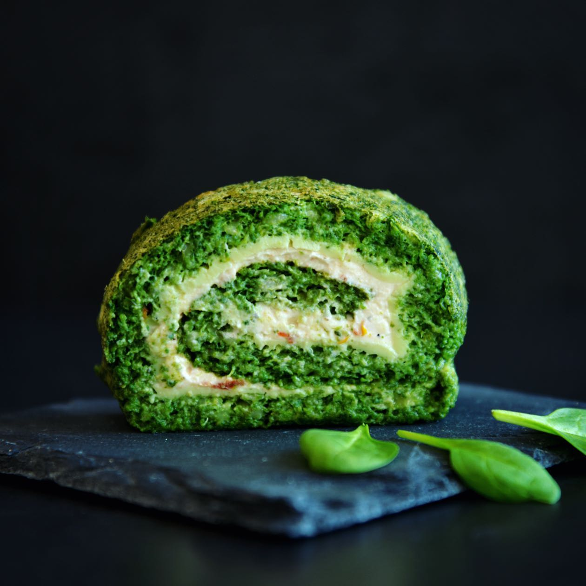

Špenátová roláda podľa @inspiracie.sk — Normy Jedál
Zvyknete na Zelený štvrtok pripravovať aj zelené jedlá? 🍏🥑🥦🥬🥒 Túto špenátovú roládu mám odskúšanú aj na jedincoch, ktorí špenát veľmi nemusia. 😉😁
.
.
.
#spring #springfood #easter #easterfood #spinach #glutenfree #canapes #partyfood #healthy #healthyfood #greenfood #spenat #ostern #spenatovarolada #rolada #bezmuky #jar #jaro #velkanoc #velikonoce #heresmyfood #onmytable #makeitdelicious #foodblogfeed #foodfluffer #hautecousine #photooftheday #foodstyling #bestrecipes #inspiraciesk